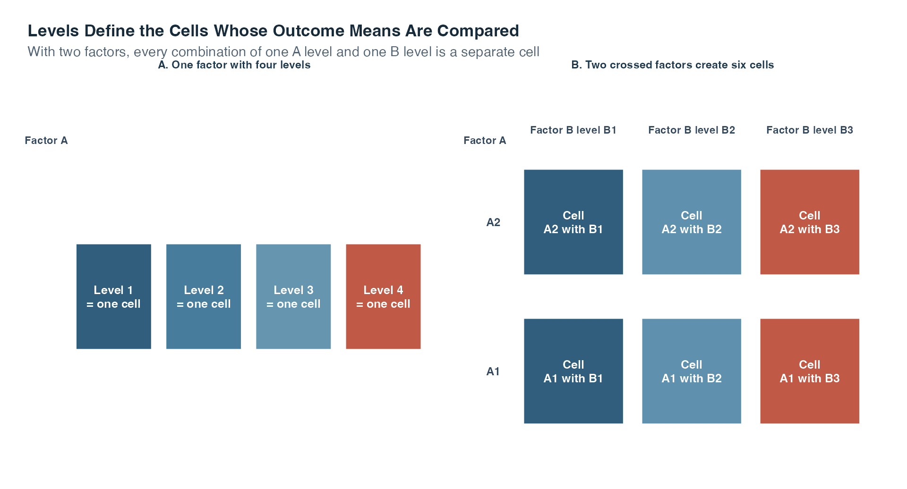
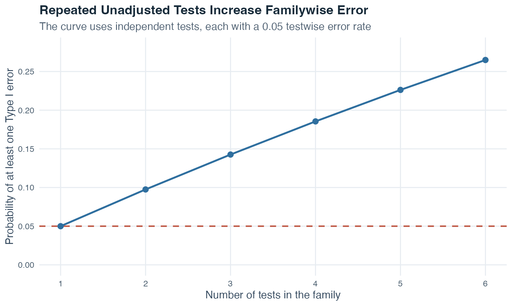
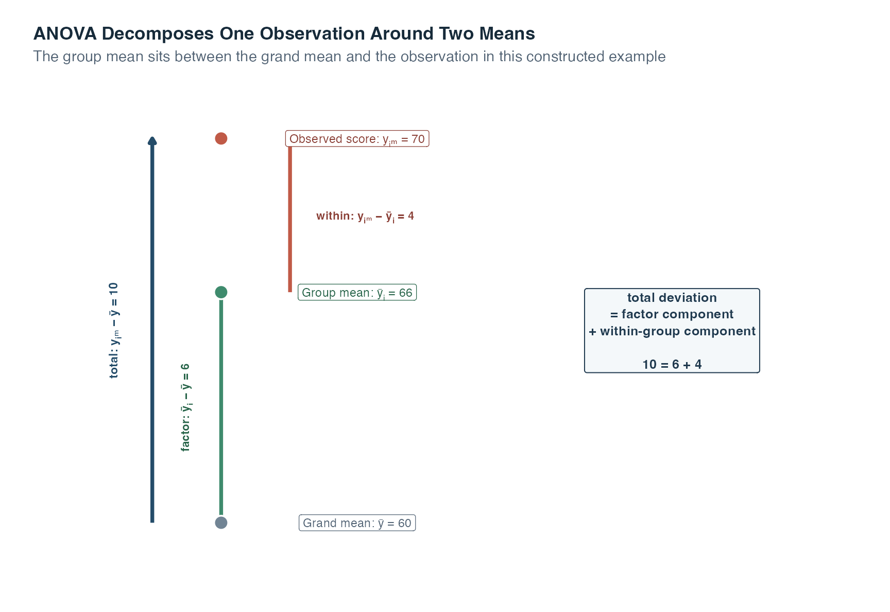
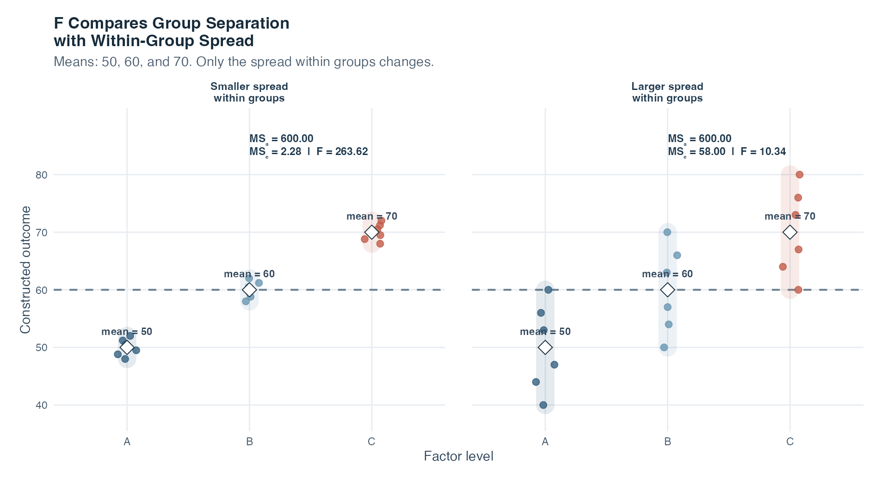
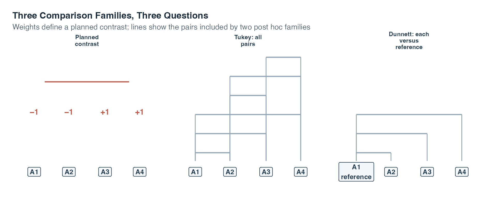
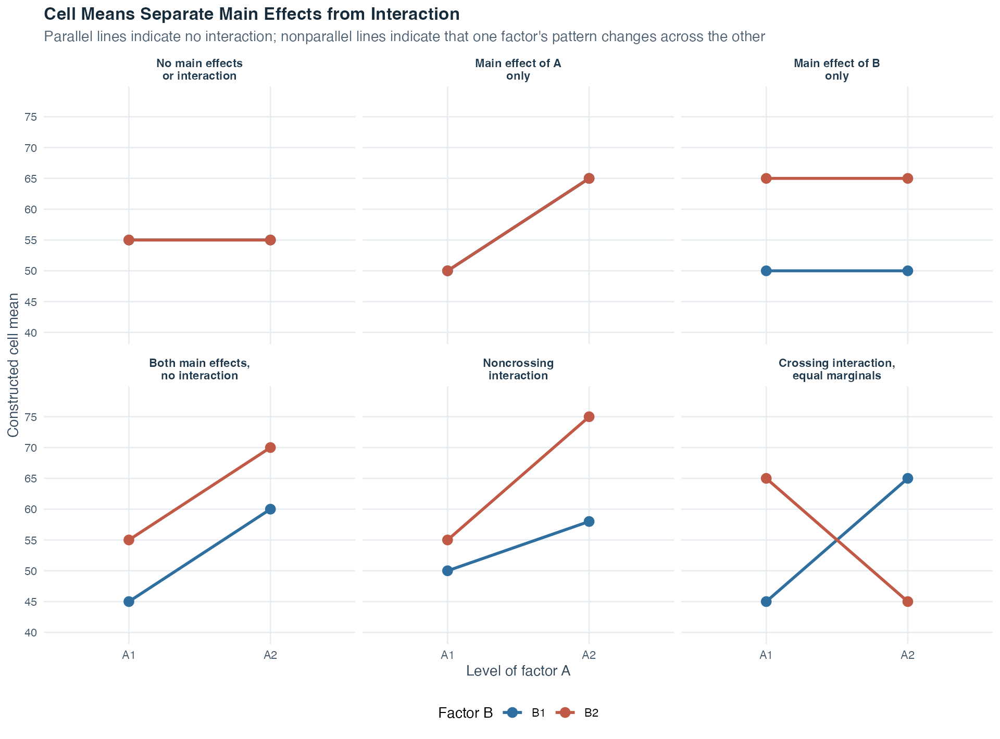
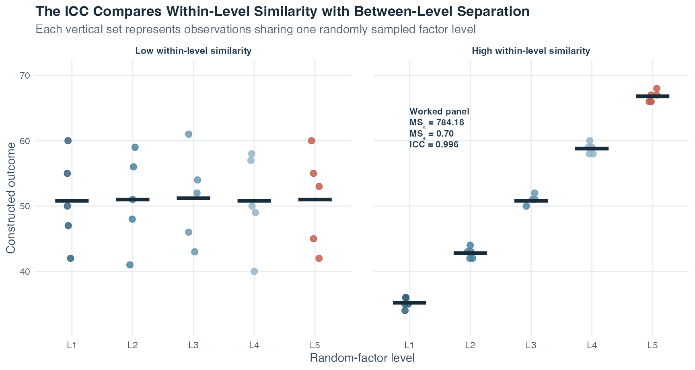
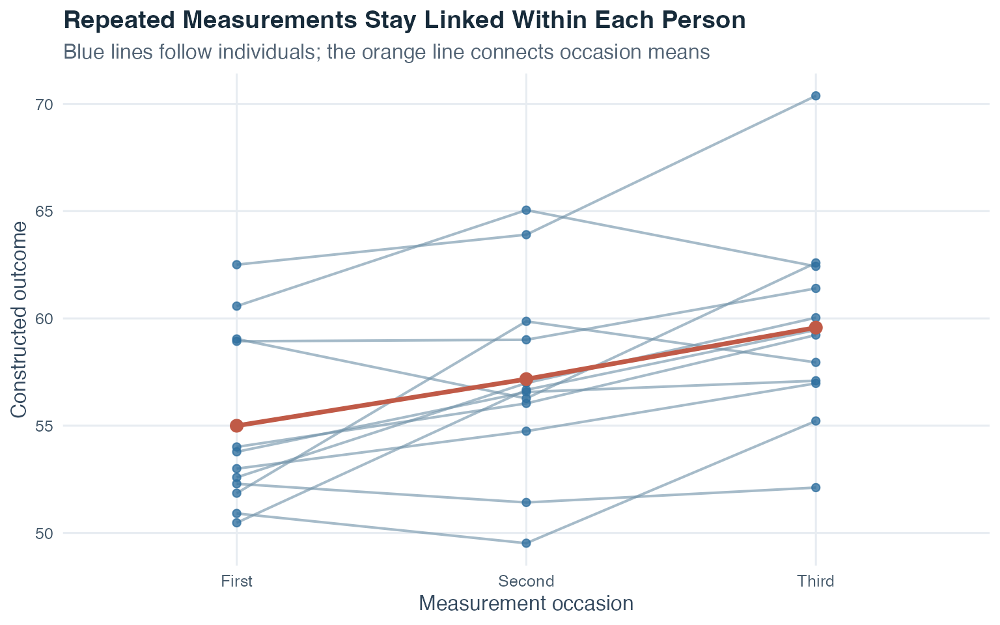
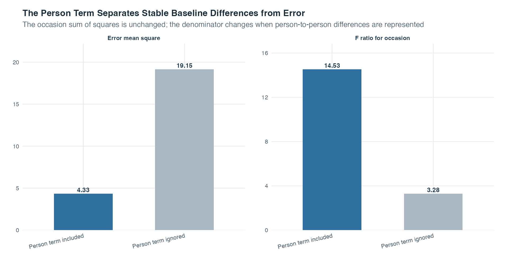

Exercise Sheet
Choose PDF for printing or Word for editing.
Introduction to Statistics · Topic 8
A t test compares two means. Topic 3 separated two designs: an independent-samples t test compares two groups made up of different cases, while a paired-samples t test compares two linked measurements, often from the same people. What should we do when a question grows from two means to three, four, or more?
ANOVA is the broader framework for that next step. A factor is a categorical explanatory variable, and its categories are called levels. A one-factor between-groups ANOVA extends the independent-samples comparison to several levels occupied by different cases. A one-factor repeated-measures ANOVA extends the paired comparison to several linked levels or occasions measured on the same cases. Running a separate unadjusted t test for every pair means evaluating each test without accounting for the other tests in the set. This creates many chances to make a Type I error, meaning a false positive when the corresponding null hypothesis is true.
Analysis of variance, abbreviated ANOVA, begins with one omnibus test. Omnibus means that the test asks one overall question across all groups:
Is there evidence that at least two population means differ?
The name can initially sound puzzling. ANOVA compares means by analyzing variation. It separates the total variation in the quantitative outcome into variation connected with group membership and variation remaining within the groups. Their ratio produces the \(F\) statistic.
The two-mean method has not disappeared. In the special case of exactly two independent groups, the ordinary pooled-variance t test and the one-way fixed-effects ANOVA test the same equality under the same equal-variance conditions. Their statistics satisfy
\[ F(1,N-2)=t(N-2)^2. \]
Squaring removes the sign of \(t\), so \(F\) cannot tell which mean is higher. It asks only whether the two means differ. The two-sided t test and this one-degree-of-freedom \(F\) test therefore give the same p-value. ANOVA becomes especially useful when one overall question must coordinate more than two means or more than one factor.
This is not a departure from regression. Topic 7 showed how a categorical predictor can be represented by dummy variables and how several related coefficients can be tested together. ANOVA takes that same linear-model idea and organizes it around factors, group means, and sums of squares.
Guiding question: When we compare several group means, how can one overall test weigh their separation against the variation that remains inside the groups?
| Multiple-regression language | ANOVA language | Same underlying idea |
|---|---|---|
| Quantitative outcome | Quantitative outcome | One measured value is modeled for each observational unit |
| Categorical predictor | Factor | Category membership helps define the fitted mean |
| Reference category and dummy coefficients | Factor levels and group comparisons | Several categories require several coordinated parameters |
| Global or nested \(F\) test | Omnibus \(F\) test | A joint null hypothesis is tested with represented variation relative to remaining variation |
| Interaction term | Factor interaction | The relationship for one predictor or factor depends on another |
The vocabulary changes because the scientific emphasis changes. In regression, we often begin by reading individual slopes. In ANOVA, we begin with the whole factor and ask whether its population means can all be equal. The fitted values, residuals, sums of squares, and \(F\) logic remain connected to what you already know.
The omnibus \(F\) test asks whether any population means differ. It does not identify which ones differ. A planned contrast is a focused group-mean comparison specified before the outcomes are inspected. A post hoc comparison is selected afterward. These procedures answer more specific questions, with adjustment when several related conclusions are tested.
By the end of this topic, you should be able to:
ANOVA uses a quantitative outcome variable, the measured value whose means are compared, and one or more categorical explanatory variables called factors.
A level is one category of a factor. If the factor is study condition with four categories, it has four levels. A cell is one observed group defined by a combination of factor levels. In a one-way ANOVA, each level is one cell. In a two-factor design, every combination of one level of factor A and one level of factor B forms a separate cell.
| Term | Beginner definition | Example structure |
|---|---|---|
| Outcome | Quantitative measurement whose means are compared | One learning score per case |
| Factor | Categorical explanatory variable | Study condition |
| Level | One category of a factor | Reference condition |
| Cell | Cases sharing one combination of factor levels | Factor A level 1 together with factor B level 2 |
| Balanced design | Equal numbers of cases in every relevant group or cell | 40 cases in each of four conditions |
| Unbalanced design | Unequal group or cell sizes | 30, 35, 40, and 55 cases |
Read the table from the measurement outward. First identify the quantitative outcome. Next identify the categorical factor and list its levels. Then determine the cells created by the exact level combinations. Only after those roles are clear should you count observations and decide whether the design is balanced. This order prevents a common mistake: treating the recorded category codes themselves as meaningful quantitative distances.
The word cell is simple in a one-factor design but becomes easier to confuse when a second factor is added. The next figure keeps the two structures side by side.

Read panel A from left to right. One factor has four levels, and each level identifies one group of cases, so there are four cells. In panel B, choose one row from factor A and one column from factor B. Their intersection is one cell. Two A levels crossed with three B levels therefore create \(2\times3=6\) cells.
The boxes show design positions, not numerical outcome values. An observed case belongs to one cell according to its factor levels, and the outcome measurements inside that cell are later summarized by a cell mean. The colors help keep columns visible without encoding higher or lower values. Whether the design is balanced depends on how many cases actually occupy each cell and cannot be read from this diagram alone.
Balance is a design property, not an ANOVA requirement. A one-way ANOVA can use unequal group sizes. However, balance makes the arithmetic and interpretation especially clear. In factorial designs, imbalance also affects how different effects are separated, so the chosen analysis must be documented carefully.
The unit of observation is the case that contributes one outcome to the analysis. In a between-groups study, each person belongs to only one group and contributes one outcome to that comparison. Identifying the unit helps us decide whether the cases are independent.
The design determines what can be concluded. Random assignment means that chance allocates cases to factor levels. When random assignment is carried out properly in an experiment, group differences can support a causal interpretation for the manipulated factor. Without random assignment, an ANOVA can still describe mean differences, but it cannot by itself establish that the factor caused them.
Before calculating anything, ask two questions: How many factors are there, and does the same person appear in more than one condition? Those answers locate the design.
| Design | Arrangement of observations | What it extends |
|---|---|---|
| One-factor between-groups | One factor; different people occupy its levels | Independent-samples t test when the factor has two levels |
| One-factor repeated measures | One factor; the same people are measured at all levels or occasions | Paired-samples t test when the factor has two levels |
| Multifactor between-groups | Two or more factors; different people occupy the crossed cells | One-factor ANOVA, now with main effects and interactions |
| Multifactor repeated measures | Two or more within-person factors; the same people contribute linked observations across their combinations | One-factor repeated measures, now with several within-person effects and interactions |
| Mixed design | At least one between-groups factor and at least one within-person factor | Group differences and within-person change in one design |
For example, measuring three different groups once is a between-groups design. Measuring the same people on three occasions is a repeated-measures design. Measuring several groups on several occasions is a mixed design because group membership is between people and occasion is within people.
Here, mixed design describes the combination of between-person and within-person factors. Later, mixed fixed-and-random model describes a model containing both fixed and random effects. These ideas often meet, but the two phrases answer different questions: one describes how observations were collected, while the other describes how effects are represented.
Guiding question: If one row of data belongs to a person, can that same person legitimately appear in another factor level? The answer tells you whether those rows may be treated as independent.
With \(p\) groups, there are
\[ \frac{p(p-1)}{2} \]
distinct pairwise comparisons. Four groups already produce six pairs. Ten groups produce 45. If each comparison is tested at the same unadjusted level, the chance of at least one false positive across the family rises. The familywise error rate is the probability of making at least one Type I error within that defined set of conclusions.
For \(m\) independent tests, each conducted with Type I error probability \(\alpha\), the exact familywise error rate is
\[ \alpha_{\text{family}}=1-(1-\alpha)^m. \]
The word family refers to the set of conclusions treated together. The independence condition matters because pairwise comparisons from the same groups often share observations and are therefore dependent.

The horizontal axis counts how many independent tests belong to the family. The vertical axis gives the chance of at least one false positive when all corresponding null hypotheses are true. The first point is 0.05 because one test is run at 0.05. The line rises with every additional opportunity for a false positive, reaching about 0.265 by six tests. The curve is not an ANOVA result and it is not the error rate for every dependent comparison set. It visualizes the exact independent-test formula stated above.
The omnibus ANOVA replaces that collection of unadjusted pairwise tests with one initial hypothesis test. If it indicates a difference, focused comparisons can follow with a comparison strategy suited to the research question.
A one-way ANOVA has one factor with \(p\) levels. Let \(\mu_i\) be the population mean at level \(i\). The null hypothesis is
\[ H_0:\mu_1=\mu_2=\cdots=\mu_p. \]
The alternative is
\[ H_1:\text{at least two population means differ}. \]
The alternative does not say that every mean differs from every other mean. It also does not specify which difference exists. That is why a significant omnibus result needs a second, more focused stage before individual groups are named.
For observation \(m\) in level \(i\), write the outcome as \(y_{im}\). Let \(n_i\) be the number of cases in level \(i\), \(N=\sum_i n_i\) the total number of cases, \(\bar y_i\) the sample mean at level \(i\), and \(\bar y\) the grand mean across every case.
These quantities let us describe the total variation as two connected deviations.
For any observation,
\[ y_{im}-\bar y = (\bar y_i-\bar y)+(y_{im}-\bar y_i). \]
Read this identity from left to right:
The three terms all live on the same outcome scale. The following diagram uses one deliberately simple observation to show how their vertical distances fit together before any value is squared.

Begin at the grand mean, 60. Moving to this case’s group mean, 66, covers 6 points. That is the factor component because it records where the fitted group center lies relative to the overall center. Moving from the group mean to the observed score, 70, covers the remaining 4 points. That is the within-group component because it records how this case differs from its own group center. Together, the green and orange arrows cover the blue total distance: \(10=6+4\).
ANOVA applies the same decomposition to every observation. It then squares the distances so positive and negative deviations cannot cancel and adds them across cases. The picture does not imply that every observation lies above both means or that the factor caused the six-point component. Other cases can lie below either mean, and causal interpretation still depends on the design.
ANOVA squares and sums these deviations. The total sum of squares is
\[ SS_{\text{total}} = \sum_{i=1}^{p}\sum_{m=1}^{n_i}(y_{im}-\bar y)^2. \]
The factor sum of squares, also called the between-groups sum of squares, is
\[ SS_A = \sum_{i=1}^{p}n_i(\bar y_i-\bar y)^2. \]
Multiplying by \(n_i\) matters because a group mean represents every case in that group.
The error sum of squares, also called the within-groups sum of squares, is
\[ SS_e = \sum_{i=1}^{p}\sum_{m=1}^{n_i}(y_{im}-\bar y_i)^2. \]
The exact partition is
\[ SS_{\text{total}}=SS_A+SS_e. \]
Here, error does not mean that somebody made a mistake. It is the variation not represented by the factor-level means in this model. It can contain individual differences, measurement variation, and any other unmodeled source.
Sums of squares grow with the number of observations and therefore cannot be compared directly when they have different numbers of free pieces. Degrees of freedom provide the next step.
The one-way degrees of freedom are
\[ df_A=p-1,\qquad df_e=N-p,\qquad df_{\text{total}}=N-1. \]
They partition in the same way as the sums of squares:
\[ df_{\text{total}}=df_A+df_e. \]
The phrase degrees of freedom means how many pieces of information can vary freely after a constraint has been imposed. Imagine three numbers that must sum to 5. You may choose the first two freely, but the third is then forced to make the total equal 5. The three numbers therefore have only two free pieces, or \(3-1\) degrees of freedom.
The ANOVA counts follow the same logic. Once the grand mean is fixed, only \(N-1\) total deviations can vary freely. Once \(p\) group means are tied to that grand mean, only \(p-1\) independent group-mean deviations remain. Within the groups, estimating one mean per group uses \(p\) pieces, leaving \(N-p\) residual degrees of freedom.
A mean square is a sum of squares divided by its degrees of freedom:
\[ MS_A=\frac{SS_A}{df_A}, \qquad MS_e=\frac{SS_e}{df_e}. \]
The omnibus test statistic is
\[ F=\frac{MS_A}{MS_e}. \]
The numerator describes group-mean separation relative to its degrees of freedom. The denominator describes the remaining within-group variation. When the population means are equal and the model conditions hold, both mean squares estimate the same error variation and \(F\) tends to be near 1. Larger values indicate that the group means are more separated than the within-group variation would ordinarily suggest.
That ratio is the central intuition of ANOVA. The next two panels hold the three group means fixed and change only how widely the observations spread inside those groups.

In both panels, the white diamonds sit at 50, 60, and 70, and the dashed grand-mean line sits at 60. The factor-related separation is therefore the same. Each panel confirms this numerically with \(MS_A=600.00\). The thick translucent ranges and the points show what changes: the vertical distances from observations to their own group diamonds.
In the left panel, those distances are short, so \(MS_e=2.28\) and \(F=263.62\). In the right panel, the group means have not moved, but the distances inside the groups are much longer. The denominator rises to \(MS_e=58.00\), reducing the ratio to \(F=10.34\). This is the whole visual logic of \(F\): the same signal in the numerator looks less distinctive when the background variation in the denominator becomes larger.
The numbers are a constructed comparison designed to isolate the ratio’s logic. They do not provide evidence about a real population and do not establish a universal boundary between a large and small \(F\). The reference distribution and its two degrees of freedom are still needed to decide how unusual an observed ratio is under \(H_0\).
The \(F\) distribution is indexed by two degrees of freedom, \(df_A\) and \(df_e\). The p-value is the right-tail probability of an \(F\) value at least as large as the observed one under \(H_0\).
| Source | Sum of squares | df | Mean square | F |
|---|---|---|---|---|
| Factor A | \(SS_A\) | \(p-1\) | \(SS_A/(p-1)\) | \(MS_A/MS_e\) |
| Error | \(SS_e\) | \(N-p\) | \(SS_e/(N-p)\) | |
| Total | \(SS_{\text{total}}\) | \(N-1\) |
The rows tell us where variation is assigned in this model. The factor row measures separation among fitted group means. The error row measures deviations of cases around those fitted means. The total row records all outcome variation around the grand mean. Read across the factor row to reconstruct the test: divide its sum of squares by its degrees of freedom to obtain \(MS_A\), then divide by \(MS_e\) from the error row to obtain \(F\). Blank cells are intentional because the error and total rows do not each receive a separate omnibus \(F\) statistic in this table.
A significant \(F\) result rejects equality of all population means. It does not yet say which means differ, whether the differences are practically important, or whether the factor caused them.
For the one-way model developed here, the factor levels are deliberately selected because those specific conditions are the focus. This is called a fixed factor. Each observation can be written as
\[ y_{im}=\mu_i+\varepsilon_{im}, \]
where \(\varepsilon_{im}\) is the case’s deviation from its population group mean. This model requires:
Diagnostic plots do not prove assumptions. They help identify patterns that conflict with the model. Never delete an inconvenient observation merely because doing so makes \(F\) larger.
Repeated measurements on the same person are not independent cases. They require the repeated-measures structure discussed later in this topic.
An omnibus result says that a difference exists somewhere. A contrast turns a focused comparison of means into one weighted sum:
\[ D=\sum_{i=1}^{p}c_i\bar y_i, \qquad \sum_{i=1}^{p}c_i=0. \]
The numbers \(c_i\) are contrast weights. Positive and negative weights place levels on opposite sides of the comparison. Multiplying every weight by the same nonzero constant changes the scale of \(D\) but not the substantive comparison.
A simple contrast compares two levels, so only two weights are nonzero. A complex contrast combines more than two levels, such as comparing the average of several active conditions with one reference. Weights can also encode a prespecified ordered pattern when that trend is the scientific hypothesis.
A planned contrast is specified from the research question before the outcomes are inspected. A post hoc comparison is selected after the omnibus analysis or after examining the data. Post hoc does not mean invalid, but the selection must be described honestly. Its multiplicity, the extra false-positive risk created by drawing several related conclusions, must also be handled.

The panels contain the same four factor levels but answer different questions. Choosing among them is therefore part of defining the scientific claim, not a technical choice made after searching for the smallest p-value.
For a balanced one-way design with \(n\) cases per level, the contrast test used here is
\[ SS_D=\frac{nD^2}{\sum_i c_i^2}, \qquad F_D=\frac{SS_D}{MS_e}, \]
with numerator degrees of freedom 1 and denominator degrees of freedom \(df_e\). Several planned contrasts still form a family when they support a connected set of claims, so planning alone does not make multiplicity disappear.
The testwise error rate is the Type I error probability for one comparison. The familywise error rate, abbreviated FWER, is the probability of at least one Type I error across the defined family.
For \(m\) mutually independent tests, solving the exact familywise equation for the per-test level gives the Sidak threshold:
\[ \alpha_{\text{test}} = 1-(1-\alpha_{\text{family}})^{1/m}. \]
This equality is exact under independence. In the balanced normal-error model used here, orthogonal contrast estimates and their numerator sums of squares are independent. Their weight vectors are orthogonal when the sum of their paired weight products is zero. However, test statistics can still share the same estimated error mean square in their denominators, so orthogonality alone does not guarantee that the tests themselves are mutually independent. The exact Sidak equality should be used only when independence of the tests has been justified.
The Bonferroni threshold is
\[ \alpha_{\text{test}}=\frac{\alpha_{\text{family}}}{m}. \]
Bonferroni controls the familywise error at no more than the selected level without requiring the tests to be independent. It is often conservative, meaning that the actual familywise error can be lower than the limit and power can be reduced.
| Number of comparisons | Raw FWER if independent | Sidak per-test alpha if independent | Bonferroni per-test alpha |
|---|---|---|---|
| 1 | 0.0500 | 0.0500 | 0.0500 |
| 2 | 0.0975 | 0.0253 | 0.0250 |
| 3 | 0.1426 | 0.0170 | 0.0167 |
| 4 | 0.1855 | 0.0127 | 0.0125 |
| 5 | 0.2262 | 0.0102 | 0.0100 |
| 6 | 0.2649 | 0.0085 | 0.0083 |
The first numerical column shows the unadjusted familywise risk under independence and therefore grows with the number of comparisons. The Sidak and Bonferroni columns answer the opposite question: how small must each test’s threshold become to keep the full family near or below 0.05? Both thresholds fall as the family grows. Sidak uses the exact independent-test equation. Bonferroni uses the simple division rule and is slightly more stringent in the displayed rows.
For six independent tests, the unadjusted familywise risk is 0.2649, not 0.05. To target a familywise level of 0.05, the displayed Sidak threshold is 0.0085 per test when independence is justified. The Bonferroni threshold is 0.0083 and controls the familywise bound without that independence requirement. A result with an unadjusted p-value of 0.03 could therefore pass a single 0.05 test but not either six-test threshold. The procedures protect the set of claims by demanding stronger evidence from each member of a larger family.
Neither method repairs a family defined after searching for attractive results. The number \(m\) must represent the scientific comparison family, and the choice of family must be reported. Multiplicity is part of the scientific interpretation because it states how many related chances for a false positive the analysis creates.
Define the family from the scientific claims, not from whichever results happen to look promising. A few comparisons chosen before seeing the outcomes provide stronger evidence for hypotheses fixed in advance than the same comparisons selected afterward and described as if they had been planned.
A factorial ANOVA contains two or more factors. With factor A and factor B, every combination of one A level and one B level is a cell. A two-factor fixed-effects model separates three questions:
A marginal mean is an average across the cells belonging to one level of a factor. A cell mean belongs to one exact combination of levels.
The number of cells is the product of the numbers of levels. A factor with two levels crossed with a factor having three levels creates \(2\times3=6\) cells. Adding factors can therefore increase the required number of groups quickly. A design must have enough observations in the resulting cells to estimate the patterns it asks about.
For two fixed factors, the effect representation is
\[ y_{ijm} = \mu+\alpha_i+\beta_j+(\alpha\beta)_{ij}+\varepsilon_{ijm}. \]
Here, \(\mu\) is the grand mean, \(\alpha_i\) represents the effect for level \(i\) of factor A, \(\beta_j\) represents the effect for level \(j\) of factor B, \((\alpha\beta)_{ij}\) represents their interaction in that cell, and \(\varepsilon_{ijm}\) is the individual error. The three omnibus null hypotheses set every \(\alpha_i\) to zero, every \(\beta_j\) to zero, or every interaction term \((\alpha\beta)_{ij}\) to zero, respectively.
The effect terms need a reference point so that the same set of cell means cannot be written in infinitely many equivalent ways. In this effects representation, the usual identifying constraints are
\[ \sum_i\alpha_i=0, \qquad \sum_j\beta_j=0, \]
and, for the interaction,
\[ \sum_i(\alpha\beta)_{ij}=0\ \text{for every }j, \qquad \sum_j(\alpha\beta)_{ij}=0\ \text{for every }i. \]
These constraints do not claim that the effects have disappeared. They define the zero point of the effect terms. With them, \(\mu\) is the grand mean, each \(\alpha_i\) is level A’s deviation from that grand mean after averaging across B, each \(\beta_j\) is the corresponding deviation for B, and the interaction is the cell-specific remainder after both additive main-effect pieces have been represented.

Read the six panels in three passes. First, ask whether the average height changes from A1 to A2. That is the main effect of A. Second, ask whether one colored line sits higher on average than the other. That is the main effect of B. Third, ask whether the two lines are parallel. A change in their separation or direction is the interaction.
Guiding question: If you summarized only the marginal means, which of these stories would you miss?
| Pattern | A1 marginal | A2 marginal | B1 marginal | B2 marginal |
|---|---|---|---|---|
| No main effects or interaction | 55.0 | 55.0 | 55.0 | 55.0 |
| Main effect of A only | 50.0 | 65.0 | 57.5 | 57.5 |
| Main effect of B only | 57.5 | 57.5 | 50.0 | 65.0 |
| Both main effects, no interaction | 50.0 | 65.0 | 52.5 | 62.5 |
| Noncrossing interaction | 52.5 | 66.5 | 54.0 | 65.0 |
| Crossing interaction, equal marginals | 55.0 | 55.0 | 55.0 | 55.0 |
In the crossing panel, every marginal mean equals 55, yet the cell pattern changes completely across the other factor. This is why an interaction must be inspected directly. When an interaction is present, a main effect is only an average over a pattern that may differ sharply between cells.
The marginal-mean table verifies what the picture can hide. Compare the first four rows to see how flatness, vertical separation, and equal slopes create the absence or presence of main effects without interaction. Then compare the last two rows. The noncrossing pattern retains marginal differences while still changing slope. The crossing pattern has four marginal means of 55, so neither set of marginal means reveals its reversal. The figure prevents overreliance on averages, while the table proves numerically that interaction and main effects answer separate questions.
The factorial ANOVA table contains separate rows for A, B, and \(A\times B\), each with its own sum of squares, degrees of freedom, mean square, and \(F\) ratio against the stated error term. Detailed calculations for unbalanced designs and designs that combine fixed and random factors require explicit model choices and are beyond this concise introduction.
A fixed factor has levels deliberately selected because those exact conditions are the focus. Its hypothesis concerns the corresponding population means or fixed effects.
A random factor has observed levels sampled through a random process from a broader population of possible levels. The focus is not the ranking of the particular sampled levels. It is the amount of outcome variation associated with differences among levels in that population. A variance component is the part of the model’s total variance assigned to one random source, such as differences among the sampled levels.
| Feature | Fixed factor | Random factor |
|---|---|---|
| How are levels obtained? | Chosen because those conditions are substantively important | Sampled to represent a broader population of possible levels |
| Main target | Differences among the selected population means | Between-level variance component \(\sigma_A^2\) |
| One-way null hypothesis | All selected level means are equal | \(H_0:\sigma_A^2=0\) |
| Repetition of the study | The same designed levels remain relevant | A new random sample of levels could be drawn |
The distinction is about the population target, not about whether the observed labels happen to look fixed on the page. If the exact selected conditions are the scientific focus, compare their means as fixed levels. If the observed levels were sampled to represent a wider population of possible levels, estimate how much outcomes vary across that population. Repeating the study clarifies the difference: a fixed-factor study keeps the target levels, while a random-factor study could sample new levels.
The same kind of label can therefore be fixed in one question and random in another. Suppose a study records outcomes under five teachers. If those five named teachers were deliberately chosen and the question concerns their exact mean differences, teacher is fixed. If five teachers were randomly sampled and the question concerns how much outcomes vary across the wider population of teachers, teacher is random. The data column can look identical in both studies even though their sampling processes and intended inferences differ.
Use three checks before choosing the role:
Guiding question: Are you trying to compare the levels you can name, or learn how much outcomes vary across levels you could have sampled?
The balanced one-way random-factor model is
\[ y_{im}=\mu+\alpha_i+\varepsilon_{im}, \]
with random level effects \(\alpha_i\) centered at zero, meaning that their population average is zero, and random errors \(\varepsilon_{im}\) centered at zero in the same sense. The two random components are independent. This model also assumes normal distributions for both components.
For a balanced one-way random-factor model with \(n\) observations at each level, we estimate
\[ \widehat{\sigma}_A^2=\frac{MS_A-MS_e}{n}, \qquad \widehat{\sigma}_e^2=MS_e. \]
The intraclass correlation, or ICC, is
\[ ICC = \frac{\widehat{\sigma}_A^2} {\widehat{\sigma}_A^2+\widehat{\sigma}_e^2}. \]
It describes the share of model variance connected with the random factor. Equivalently, it describes how similar observations tend to be when they belong to the same sampled level. The ICC matters because independence becomes implausible when observations sharing a level are strongly alike. It turns that clustering into a quantity rather than leaving it as a visual impression.

In the low-similarity panel, values from the five levels overlap heavily. Knowing a case’s level tells us little about its outcome, so the between-level component is small relative to within-level variation. In the high-similarity panel, points cluster tightly within each level and the level clusters sit farther apart. Cases sharing a level are then more alike, which is the pattern represented by a larger ICC.
Now calculate the ICC for the high-similarity panel instead of judging it only by eye. Each of its five random-factor levels contains \(n=5\) constructed observations.
| Quantity | Value |
|---|---|
| Observations per random-factor level | 5 |
| Between-level mean square, MSₐ | 784.160 |
| Within-level mean square, MSₑ | 0.700 |
| Estimated between-level variance | 156.692 |
| Estimated within-level error variance | 0.700 |
| Estimated ICC | 0.996 |
The between-level mean square, \(MS_A=784.160\), is large because the five level means are far apart. The within-level mean square, \(MS_e=0.700\), is small because observations sharing a level sit close together. Substitution gives
\[ \widehat{\sigma}_A^2 = \frac{784.160- 0.700} {5} = 156.692, \]
while \(\widehat{\sigma}_e^2=MS_e=0.700\). Therefore,
\[ ICC = \frac{156.692} {156.692+ 0.700} = 0.996. \]
This value is close to 1 because most of the model variance in this constructed panel is associated with which random-factor level an observation belongs to. It does not mean that 99.6% of individual outcomes are predicted correctly. It describes clustering under this balanced one-way random-factor model.
The one-way ICC formula above belongs to this balanced one-way random-factor setting. It should not be treated as one universal ICC formula for every setting with repeated or grouped observations.
With two factors, the role of each factor must be stated before the \(F\) tests are constructed.
| Model type used here | Factor roles | Main inferential targets |
|---|---|---|
| Model I | Both factors fixed | Mean differences for A, mean differences for B, and their fixed interaction |
| Model II | Both factors random | Variance components for A, B, and their random interaction |
| Model III | One factor fixed and one random | A fixed mean pattern plus random-factor and random-interaction variance components |
These models can use different mean squares in the denominators of their \(F\) ratios. The ordinary fixed-effects habit of dividing every factor mean square by \(MS_e\) is therefore not a universal rule once random factors enter. Statistical software must be told which factors are fixed and which are random. The detailed denominator derivations are beyond this introduction, but the design decision itself is not optional.
A between-groups ANOVA assigns different people to different levels. A repeated-measures ANOVA records the same people at several levels or occasions. Measurements from one person are related because they share that person’s baseline characteristics. Treating them as independent would ignore information built into the design.
| Design | Who supplies the levels? | Dependence structure | Variation the model must represent |
|---|---|---|---|
| Between groups | Different people occupy different levels | Cases are independent across the intended units | Group differences and within-group differences |
| Repeated measures | The same people appear at several levels or occasions | Measurements are linked within each person | Condition differences, stable person differences, and remaining within-person variation |
The one-factor repeated-measures model used here is
\[ y_{im}=\mu+\alpha_i+\pi_m+\varepsilon_{im}, \]
where \(\alpha_i\) is the fixed occasion or condition effect and \(\pi_m\) is the random person effect. The person term separates stable between-person differences from within-person change.

Each thin blue line belongs to one constructed person. Its vertical position shows that people can begin at different outcome levels, while its movement across occasions shows that within-person change can also differ. The thick orange line connects the occasion means and summarizes the average pattern. An analysis using only that orange line would ignore the person-to-person structure visible underneath it.
What exactly changes when the person term is included? The next comparison fits the same 36 constructed measurements twice. The repeated-measures version includes both occasion and person. The incorrect comparison version includes occasion but ignores person, treating stable baseline differences as part of its undifferentiated residual.
| Analysis | Occasion SS | Occasion df | Occasion MS | Error SS | Error df | Error MS | F for occasion |
|---|---|---|---|---|---|---|---|
| Person term included | 125.705 | 2 | 62.853 | 95.195 | 22 | 4.327 | 14.525 |
| Person term ignored | 125.705 | 2 | 62.853 | 631.973 | 33 | 19.151 | 3.282 |

The occasion sum of squares is 125.705 in both rows. That is expected in this balanced construction: the three occasion means and their separation are the same whichever denominator is later used. The difference appears in what counts as error.
With the person term, the variation is organized as
\[ SS_{\text{total}} =SS_{\text{occasion}}+SS_{\text{person}}+SS_e. \]
Stable vertical differences among the blue person lines receive their own \(SS_{\text{person}}\) component. The remaining \(MS_e=4.327\) describes variation left after both occasion and person have been represented. The occasion statistic is then \(F=14.525\).
When person is ignored, those stable baseline differences are pushed into the residual. Its error mean square rises to 19.151, and the same occasion mean square is divided by a larger, poorly targeted denominator. The resulting \(F=3.282\) answers the occasion question less efficiently and rests on the false idea that measurements from the same person are unrelated.
The lesson is structural, not a trick for making \(F\) larger. Include the person term because the same people were measured repeatedly. If different people supplied the occasions, adding a person identifier would not create a repeated-measures design.
The one-factor model above asks whether one within-person factor changes across its levels. The same design logic can expand in two directions:
Suppose several groups are measured on several occasions. The group main effect asks whether the groups differ on average across occasions. The occasion main effect asks whether outcomes change on average across groups. The group-by-occasion interaction asks the most design-specific question: Does the pattern of change differ between the groups? Parallel group trajectories suggest no interaction. With nonparallel trajectories, the group difference changes across occasions.
These additional factors do not erase the dependence. Every set of observations from one person remains linked, while observations from different people remain separate units. The correct model must represent both parts. This is why a mixed design is more than a factorial table with repeated rows: the row relationships determine the error structure used for each question.
In addition to the normality and independence conditions stated for the random terms, the usual repeated-measures \(F\) test requires sphericity. Sphericity means that the population variances of all pairwise difference scores are equal. With three occasions, compare the variance of first-minus-second, first-minus-third, and second-minus-third differences. The difference scores may have nonzero variance and unequal means. Under sphericity, it is their variances that must match.
Unequal time gaps or other within-person patterns can violate sphericity. The Greenhouse-Geisser correction uses an estimate \(\widehat\varepsilon\) at or below 1 to reduce both the numerator and denominator degrees of freedom:
\[ df_{\text{condition}}^* = \widehat\varepsilon\,df_{\text{condition}}, \qquad df_e^* = \widehat\varepsilon\,df_e. \]
The observed \(F\) ratio stays the same, but its p-value or critical value is recalculated from the corrected degrees of freedom. Values of \(\widehat\varepsilon\) farther below 1 produce a stronger correction. The correction changes the reference distribution for the test and leaves the dependence among the original measurements unchanged.
ANOVA belongs to the general linear model developed across Topics 5 through 8:
A categorical factor can enter a regression equation through dummy variables. Begin with a three-level factor and choose level 1 as the reference. Two dummy variables are enough:
\[ \widehat Y=b_0+b_1D_2+b_2D_3. \]
| Factor level | \(D_2\) | \(D_3\) | Fitted group mean |
|---|---|---|---|
| Level 1, reference | 0 | 0 | \(b_0\) |
| Level 2 | 1 | 0 | \(b_0+b_1\) |
| Level 3 | 0 | 1 | \(b_0+b_2\) |
Read the rows by substitution. When both dummies are 0, the fitted value is the reference mean \(b_0\). Turning on \(D_2\) adds \(b_1\), so that coefficient is level 2 minus the reference. Turning on \(D_3\) adds \(b_2\), the level 3 difference. The dummy values are switches, not measured distances between categories.
Topic 7’s multiple-regression omnibus \(F\) test asked whether a set of predictors jointly improves the fitted model. Here, the ANOVA omnibus \(F\) test asks whether the dummy coefficients for a factor can jointly be zero. Both compare represented variation with remaining error variation. ANOVA and regression are therefore different presentations of the same linear-model framework, with the scientific question determining which vocabulary is most transparent.
Guiding question: If every dummy coefficient were zero, what fitted mean would every factor level receive?
The phrase “\(F\) test” does not name one universal question. ANOVA uses the same broad ratio logic for several different null hypotheses. The numerator changes according to the effect or comparison being tested, while the appropriate error mean square supplies the denominator in the fixed-effects cases developed here.
| Scientific question | Null hypothesis | Supported test in this topic |
|---|---|---|
| Do any means differ across one factor with \(p\) levels? | \(H_0:\mu_1=\cdots=\mu_p\) | One-way omnibus \(F\) test with \(p-1\) numerator degrees of freedom |
| Does one prespecified weighted comparison differ from zero? | \(H_0:D=\sum_i c_i\mu_i=0\) | Contrast \(F\) test with one numerator degree of freedom |
| Is there a main effect of factor A after averaging across B? | \(H_0:\alpha_i=0\) for every \(i\) | Factor-A \(F\) test |
| Is there a main effect of factor B after averaging across A? | \(H_0:\beta_j=0\) for every \(j\) | Factor-B \(F\) test |
| Does the pattern for A change across levels of B? | \(H_0:(\alpha\beta)_{ij}=0\) for every cell | Interaction \(F\) test |
The dummy-coded three-level equation makes the first distinction especially concrete. Its omnibus factor test is the joint hypothesis
\[ H_0:\beta_1=\beta_2=0. \]
By contrast, an individual coefficient test of \(H_0:\beta_1=0\) compares level 2 only with the chosen reference level. It says nothing directly about level 3 versus the reference or level 2 versus level 3. With exactly two factor levels there is only one dummy coefficient, so under the same equal-variance conditions the one-degree-of-freedom omnibus statistic and the corresponding two-sided coefficient statistic satisfy \(F=t^2\). With three or more levels, the joint \(F\) test is needed to ask about the whole factor at once.
In a factorial ANOVA, the three rows for A, B, and \(A\times B\) are likewise three separate tests. A significant interaction says that one factor’s pattern changes across the other factor. It does not automatically identify the cell comparisons responsible for that pattern, and it can make a marginal main effect an incomplete summary. Planned contrasts or justified follow-up comparisons provide the next, more focused questions.
This section concerns the general linear model. A generalized linear model is a different model family and is not introduced in this Statistics 1 learning sequence. The similar names should not be used interchangeably.
Repeated data and nested data, in which cases are grouped inside larger units such as students within classes, can be represented more flexibly with a mixed linear model. This kind of model combines fixed and random effects to represent both average patterns and grouping-related variation. That extension preserves the central lesson: relationships among observations belong in the model, not in an afterthought.
ANOVA is needed because a collection of group means creates two problems at once. First, visible sample differences can arise even when population means are equal. Second, testing every pair separately creates a growing family of opportunities for false-positive conclusions. ANOVA begins with one coordinated question: Is the separation among the fitted group or cell means large relative to the variation that still remains within those fitted groups?
That comparison is the essence of the \(F\) ratio. The numerator represents the particular pattern named by the hypothesis, such as a whole factor, one planned contrast, or an interaction. The denominator represents an appropriate estimate of remaining error variation. A large ratio is evidence against that specific null hypothesis, not a general declaration that every group differs, every coefficient matters, or the result is practically important.
The method therefore has a deliberate rhythm. First examine the design and the distributions. Then use an omnibus or effect-specific \(F\) test to ask whether a structured pattern is detectable. Only afterward use prespecified contrasts or multiplicity-aware follow-up comparisons to locate the differences the broad test could not name. This separation lets a learner say exactly which question was planned, which was exploratory, and which family of conclusions needs protection.
The extensions are easier to organize when their purpose is kept visible. A one-way ANOVA compares the levels of one factor. A factorial ANOVA adds factors and asks whether their effects are additive or interactive. A random factor changes the population target from selected mean differences to a variance component. A repeated-measures ANOVA represents the link among observations from the same person instead of pretending that those rows are independent. Each extension changes the model in response to a different scientific question or dependence structure, which is what connects the formulas.
Finally, ANOVA closes the regression sequence. Dummy coding lets a regression equation reproduce group means, and a joint test of the corresponding dummy coefficients is the ANOVA factor test. Factorial interactions are the categorical counterpart of the interaction terms from multiple regression. Sums of squares still divide represented variation from residual variation. Seeing that common structure turns ANOVA from an isolated table to a coherent way of asking whether categorical predictors organize meaningful outcome variation.
Closing check: Can you name the fitted means or cell pattern, state exactly which coefficients or effects are jointly zero under the null, identify the correct error structure, and explain what a significant result still does not tell you? If so, you have the central logic of ANOVA.
Use this order:
The simulated example now applies the one-way core of this workflow without adding factorial, random-factor, or repeated-measures analyses to the same dataset.
Topic 1 introduced simulation, random-number generators, fixed seeds, and reproducibility. This example reuses that established setup: a stored recipe and seed recreate the same artificial values each time the page is built.
This example contains 160 artificial participants. It is a one-way study because it has one categorical factor, study condition. Random assignment means that a chance process determines each condition rather than a participant characteristic or an analyst’s choice. Here, that process places exactly 40 participants in each of four study-routine conditions. The outcome is a constructed learning score from 0 to 100.
Four sample means will appear on the page, but visible differences between them are only the beginning of the reasoning. Three questions guide the analysis:
Are the mean differences large relative to the score variation that remains within the groups? What can one overall, or omnibus, test establish without claiming that every pair differs? How should a comparison chosen before inspecting outcomes be separated from all-pairs exploration afterward?
Together, these questions lead to the central analysis: do the population mean learning scores differ across the four randomized study conditions in this constructed model?
| Design element | Role in the simulation |
|---|---|
| Outcome | Learning score from 0 to 100 |
| Factor | Study condition |
| Levels | Reference, planning guide, retrieval prompts, combined routine |
| Cell | One condition, because this is a one-factor design |
| Assignment | Randomized by the simulation recipe |
| Balance | 40 cases in every level |
| Unit of observation | One artificial participant |
The design table is a checklist for choosing the model. There is one quantitative outcome, one categorical factor, four levels, and one observation from each artificial participant. Equal group sizes make the design balanced. Random assignment belongs to the recipe, so the simulated analysis can illustrate experimental logic, while the absence of real participants keeps every substantive conclusion fictional.
The example follows the omnibus analysis first, then one prespecified contrast, a focused comparison chosen before the outcomes are inspected, and one all-pairs post hoc family, a set of comparisons examined after the overall result. That order matters: we do not search the pairwise table first and then pretend that the most attractive comparison was planned.
Step 1: Verify the Rows and Group Sizes
Each participant contributes one outcome in one condition. The interactive table contains all 160 randomized rows. Use its search field, sorting controls, and page controls to inspect the assignments while keeping each participant’s condition and outcome together.
The table confirms that each participant ID appears with one condition and one learning score. Participant IDs are labels, not quantitative measurements. Every calculation uses this complete dataset.
The group summaries confirm the balanced allocation.
| Study condition | n | Mean | SD | Minimum | Maximum |
|---|---|---|---|---|---|
| Reference | 40 | 59.82 | 8.38 | 41.1 | 80.9 |
| Planning guide | 40 | 63.81 | 7.34 | 47.8 | 78.1 |
| Retrieval prompts | 40 | 65.87 | 7.54 | 49.9 | 85.7 |
| Combined routine | 40 | 69.84 | 7.52 | 52.4 | 83.6 |
Read the group-summary table in two directions. Across a row, the mean locates a condition’s center, the standard deviation describes typical within-condition spread, and the minimum and maximum show its observed range. Down the table, every \(n\) equals 40, which verifies balance, while the means provide the first visible evidence of group separation. The grand mean across all 160 scores is 64.836. A table alone cannot show the distribution of individual scores, so the next step plots every observation.
Step 2: Plot the Group Distributions Before Testing
Every dot is one artificial participant, so the slight position jitter only keeps overlapping points visible and has no numerical meaning. The line inside each box marks the median, the box covers the middle half of the scores, and the overlaid mean marker locates the quantity used in the ANOVA calculation. The sample means increase across the four conditions. The boxes and points also overlap, reminding us that ANOVA compares the size of between-group separation with the remaining within-group variation. It does not require every score in one group to exceed every score in another.
The population hypotheses are
\[ H_0:\mu_{\text{reference}} =\mu_{\text{planning}} =\mu_{\text{retrieval}} =\mu_{\text{combined}} \]
and
\[ H_1:\text{at least two of these population means differ}. \]
Step 3: Partition the Variation
The manual calculations give:
| Quantity | Value |
|---|---|
| Total sum of squares | 11350.387 |
| Factor sum of squares | 2093.474 |
| Error sum of squares | 9256.913 |
| Factor SS + error SS | 11350.387 |
| Total degrees of freedom | 159.000 |
| Factor df + error df | 159.000 |
The table contains two parallel checks. Its sum-of-squares rows verify how the observed outcome variation is divided. Its degrees-of-freedom rows verify how the available information is divided. The two equalities hold apart from displayed rounding:
\[ 11350.387 = 2093.474 + 9256.913, \]
\[ 159 = 3 + 156. \]
Both bars have the same total length because they describe the same total sum of squares. The first bar keeps that variation in one piece. The second opens it into the factor component and error component. The factor segment records the separation of the four condition means from the grand mean. The larger error segment records the individual deviations around those condition means. Its size alone does not settle whether the factor matters, because \(F\) compares the corresponding mean squares after accounting for their different degrees of freedom.
Step 4: Complete and Interpret the ANOVA Table
The mean squares are
\[ MS_A = \frac{2093.474}{3} = 697.825, \]
\[ MS_e = \frac{9256.913}{156} = 59.339. \]
Therefore,
\[ F = \frac{697.825} {59.339} = 11.760. \]
| Source | SS | df | MS | F | p |
|---|---|---|---|---|---|
| Study condition | 2093.474 | 3 | 697.825 | 11.760 | < .001 |
| Error | 9256.913 | 156 | 59.339 | ||
| Total | 11350.387 | 159 |
The ANOVA table compresses the entire calculation into rows. The factor row carries \(SS_A\), \(df_A\), \(MS_A\), and the resulting \(F\). The error row supplies \(SS_e\), \(df_e\), and the denominator \(MS_e\). The total row verifies the complete outcome variation but does not need its own \(F\) value. Reading across the factor row reproduces the formulas immediately above it.
The result is \(F(3, 156)=11.760\), \(p<.001\). Under the model assumptions, the data are difficult to reconcile with equal population means across all four constructed conditions. At least two means differ.
The ANOVA table gives the p-value numerically. The next figure shows exactly where that probability lives in the reference distribution.
The horizontal axis contains possible \(F\) ratios under equal population means and the stated model conditions. The curve’s height is a density, so the p-value is an area rather than the height at one point. The dashed line marks the observed \(F\). Every value in the pale vertical band to its right is at least as large. The p-value is the area under the density curve across that band, which is so small here that its filled shape lies almost on the horizontal axis.
Only the right tail is used because an \(F\) ratio becomes evidence against \(H_0\) by being unusually large. A ratio near 1 is compatible with factor and error mean squares of similar size. The shaded region does not give the probability that \(H_0\) is true, does not measure practical importance, and does not identify the particular means that differ.
The omnibus result does not tell us that every pair differs. It also does not show which study routine is responsible. We now turn to the comparison that was specified before outcomes were inspected.
Step 5: Test One Prespecified Contrast
The planned question compares the average of the three active routines with the reference condition. The weights \((-3,1,1,1)\) sum to zero.
| Study condition | Group mean | Weight | Weight times mean |
|---|---|---|---|
| Reference | 59.820 | -3 | -179.460 |
| Planning guide | 63.812 | 1 | 63.812 |
| Retrieval prompts | 65.867 | 1 | 65.867 |
| Combined routine | 69.842 | 1 | 69.842 |
The weights table shows the comparison before it shows the test. The reference mean receives weight \(-3\), and each of the three active means receives weight \(+1\). The weights sum to zero, as a valid contrast requires. The final column reveals each group’s contribution to the weighted sum, so adding that column gives \(D\).
The weighted contrast value is \(D=20.0625\). Because the chosen weights scale the active-versus-reference difference by 3, dividing by 3 gives the directly interpretable difference between the average active-routine mean and the reference mean:
\[ \frac{D}{3}=6.687\text{ points}. \]
For the balanced design,
\[ SS_D = \frac{40(20.0625)^2} {(-3)^2+1^2+1^2+1^2} = 1341.680, \]
and
\[ F_D = \frac{1341.680} {59.339} = 22.610. \]
| Comparison | Mean difference | Contrast SS | Numerator df | Denominator df | F | p |
|---|---|---|---|---|---|---|
| Average of three active routines minus reference | 6.687 | 1341.68 | 1 | 156 | 22.61 | < .001 |
The result table then connects the scientific comparison to its inferential test. The mean-difference column gives the effect in learning-score points. Contrast SS expresses that comparison as a one-degree-of-freedom portion of outcome variation. Dividing by the same \(MS_e\) used in the omnibus model produces \(F_D\).
The constructed active routines average 6.687 points above the reference, with \(F(1, 156)=22.610\), \(p<.001\). This is one genuinely prespecified test in the simulation, not a comparison selected because its result looked favorable.
Step 6: Use an All-Pairs Post Hoc Family for Exploratory Detail
Suppose the analyst also wants every pair after seeing the significant omnibus result. This is exploratory because the analyst examines more detailed patterns after seeing the outcomes rather than testing only a comparison fixed in advance. Tukey’s procedure treats all six pairs as one family and reports familywise-adjusted p-values and simultaneous 95% confidence intervals. Simultaneous means that the 95% coverage applies to the full set of pairwise intervals together under the procedure, rather than separately to each interval as if no other comparisons existed.
| Comparison | Mean difference | Lower 95% | Upper 95% | Adjusted p |
|---|---|---|---|---|
| Planning guide-Reference | 3.992 | -0.481 | 8.466 | .098 |
| Retrieval prompts-Reference | 6.047 | 1.574 | 10.521 | .003 |
| Combined routine-Reference | 10.023 | 5.549 | 14.496 | < .001 |
| Retrieval prompts-Planning guide | 2.055 | -2.418 | 6.528 | .632 |
| Combined routine-Planning guide | 6.030 | 1.557 | 10.503 | .003 |
| Combined routine-Retrieval prompts | 3.975 | -0.498 | 8.448 | .101 |
Each Tukey row is one directed subtraction. A label written as “A-B” reports the mean of A minus the mean of B, so the sign must be read in that displayed order. The mean-difference column gives the estimated distance, while the lower and upper limits show its simultaneous interval. An interval containing zero is compatible with no difference for that pair under this family-level procedure. An interval entirely on one side of zero supports a directional difference at the protected family level. The adjusted p-value evaluates the same pair while accounting for all six pairwise comparisons.
The table does not turn exploratory comparisons into planned hypotheses. It answers a broader all-pairs question with the corresponding multiplicity protection.
A Dunnett family would be more focused if the only post hoc question were how each active routine compares with the reference. Choosing Tukey or Dunnett is a question-design decision, not a search for whichever method produces smaller p-values.
Step 7: Inspect the Model Diagnostics and State the Limits
The residual-versus-fitted panel shows four vertical bands because every case in a condition has the same fitted group mean. Compare the vertical spread of those bands rather than searching for a sloped relationship between them. Their spreads are reasonably similar in this constructed dataset. The Q-Q panel orders the standardized residuals and compares them with values expected from a normal distribution. Points reasonably near the reference line indicate no severe departure designed into this simulation, although neither panel proves an assumption.
Independence and random assignment cannot be diagnosed from these plots. They are properties of the data-generating and study procedures. Here, the recipe generates each participant’s score variation independently and gives each participant one outcome, which supplies the independence built into this artificial example. A separate random-assignment step determines the condition labels, while independent errors still depend on the data-generating process.
The four constructed condition means are not all equal. The prespecified comparison estimates that the three active routines average 6.687 points above the reference, and the Tukey table describes the adjusted all-pairs follow-up. These results belong to the artificial randomized model and do not describe real learners.
This simulation is balanced, complete, randomized, and generated with similar within-group spreads. Real studies may have missing outcomes, unequal cell sizes, departures from the planned procedure, errors that are not normally distributed, unusual observations that strongly affect the model, or dependent cases.
The seven steps followed the Theory section’s one-way logic. We named the outcome and factor, verified the design, plotted every group, partitioned total variation into factor and error components, formed their mean-square ratio, interpreted the omnibus result, and then kept the prespecified contrast separate from the exploratory all-pairs family. The diagnostics returned attention to the residuals and to the design conditions that a graph cannot verify.
The final topic closes the learning sequence by showing that the later methods are different views of one connected set of linear questions.
| Topic | Starting question | What is fitted or summarized | How it leads forward |
|---|---|---|---|
| Covariance and correlation | Do two quantitative variables vary together? | Direction and strength of paired linear movement | Establishes the association that regression will represent with a line |
| Simple linear regression | How does one fitted outcome change with one quantitative predictor? | One line, fitted values, and residuals | Introduces prediction, sums of squares, and model error |
| Partial correlation | Do two variables still move together after both are adjusted for one third variable? | Correlation between two residual columns | Makes statistical adjustment visible |
| Multiple regression | How is one outcome associated with several predictors at the same time? | Conditional slopes, dummy coefficients, interactions, and joint tests | Places quantitative and categorical predictors in one equation |
| ANOVA | Do population means differ across categorical factor levels? | Group means, partitioned variation, contrasts, and omnibus \(F\) tests | Expresses group comparison as another linear model |
Start at the top of the table. Correlation is symmetric: it tells us that two variables move together but does not assign an outcome. Simple regression names an outcome, fits its mean from one predictor, and leaves observed-minus-fitted residuals. Partial correlation uses those residuals to ask an adjusted association question. Multiple regression keeps one outcome and brings several predictor contributions into the same fitted value.
ANOVA then specializes that framework for categorical predictors. To see the connection in the simplest two-group case, code group membership with \(D=0\) for the reference group and \(D=1\) for the comparison group:
\[ \widehat{Y}=b_0+b_1D. \]
For the reference group, substituting \(D=0\) gives fitted mean \(b_0\). For the comparison group, substituting \(D=1\) gives fitted mean \(b_0+b_1\). The coefficient \(b_1\) is therefore the difference between the two fitted group means. With more than two levels, \(k-1\) dummy variables represent the group means, and the omnibus ANOVA \(F\) test asks whether their coordinated population coefficients can all be zero.
The same connection explains the arithmetic in the simulated example. \(SS_A\) is model variation associated with the categorical predictor, as \(SS_{\text{model}}\) records represented variation in regression. \(SS_e\) is the residual variation around fitted group means, as regression residuals measure observed-minus-fitted distances. Their mean-square ratio creates the ANOVA \(F\) statistic, while a regression global or nested \(F\) test uses the same broad logic of represented variation relative to what remains.
The extensions also fit the picture. A factorial ANOVA adds more categorical predictors and their interactions. Analysis of covariance combines categorical and quantitative predictors. A random factor changes the target from selected mean differences to a variance component. Repeated measures add a person term because observations from the same person are linked. These are not disconnected tests to memorize. They are model choices that reflect the variables, design, dependence, and scientific question.
The warmest way to remember the sequence is this: first describe how variables move, then fit a line, then ask what remains after adjustment, then allow several predictors, and finally recognize group comparisons as part of the same fitted-model family. The formulas become easier once each one is attached to that story.
Choose PDF for printing or Word for editing.
Choose PDF for printing or Word for editing.
Analysis of variance, or ANOVA, compares population means across levels of one or more categorical factors. Its omnibus \(F\) test compares variation represented by the factor with the remaining variation inside the fitted groups.
For \(p\) factor levels,
\[ H_0:\mu_1=\cdots=\mu_p, \]
while the alternative says that at least two population means differ. It does not say that every pair differs.
The observed variation is partitioned exactly:
\[ SS_{total}=SS_A+SS_e. \]
| Source | Degrees of freedom | Mean square | Test statistic |
|---|---|---|---|
| Factor A | \(p-1\) | \(MS_A=SS_A/(p-1)\) | \(F=MS_A/MS_e\) |
| Error | \(N-p\) | \(MS_e=SS_e/(N-p)\) | |
| Total | \(N-1\) |
A significant omnibus result is followed by a question-matched comparison plan. A contrast uses weights that sum to zero. Planned contrasts are specified before inspecting outcomes. Post hoc families such as Tukey all-pairs or Dunnett reference comparisons protect the familywise Type I error rate for their stated family. Bonferroni does not require independent tests, though it can be conservative.
| Extension | New question |
|---|---|
| Factorial ANOVA | How do several categorical factors and their interactions relate to the outcome? |
| Random factor | How much model variance is associated with levels sampled from a wider population of levels? |
| Repeated measures | How do conditions differ when the same people are measured repeatedly? |
| Analysis of covariance | How do categorical and quantitative predictors work together in one model? |
For a balanced one-way random factor,
\[ \widehat{\sigma}_A^2=\frac{MS_A-MS_e}{n}, \qquad ICC=\frac{\widehat{\sigma}_A^2} {\widehat{\sigma}_A^2+\widehat{\sigma}_e^2}. \]
In repeated-measures ANOVA, the same person’s observations are linked. Sphericity asks whether all population variances of pairwise difference scores are equal. A Greenhouse-Geisser correction multiplies the numerator and denominator degrees of freedom by \(\widehat\varepsilon\); it leaves the observed \(F\) unchanged and recalculates its reference.
ANOVA is not isolated from regression. Dummy variables represent factor levels, fitted group means are regression fitted values, and \(SS_e\) is residual variation. Correlation, simple regression, partial correlation, multiple regression, and ANOVA therefore form one developing family of linear questions. The design, variable roles, dependence, and population target determine which version is appropriate.